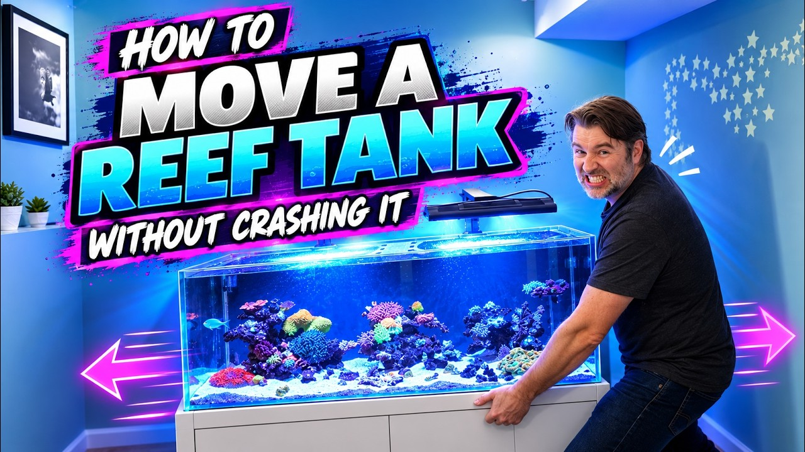

Friday, October 23, 2026 · 29 items · back issues
Howdy, it's Isaac again.
Happy Friday, reefing family, and welcome back to my Weekly Dive.
Here are the biggest things worth knowing:
- Steroid hormones produced by coral-associated Endozoicomonas influence coral immune response during thermal stress
- Changing coral disease dynamics with the emergence of stony coral tissue loss disease on reefs at Carrie Bow Cay, Belize Barrier Reef
- Functional convergence despite taxonomic turnover across coral-associated microbiomes
- A New Way to Rescue Dying Corals
- Plus 25 more across wild reefs, husbandry & science, events
Let's dive into the news touching our hobby…
Community4
-
A New Way to Rescue Dying Corals
Stanford research shows contact with healthy corals rescues bleached specimens in days, published in Science Advances. Novel coral recovery mechanism applicable to restoration and captive propagation.
Reefs.com · xeniaforever · Oct 19 · reefs.com
-
An Acropora Lover’s Dream! | 160-Gallon SPS Reef in Brazil
Tour of a 160-gallon SPS-dominated reef in Brazil with discussion of lighting, water chemistry, and filtration. Build logs with useful husbandry detail on keeping high-demand corals are solidly interesting for the community.
19 min World Wide Corals · Oct 22 · youtube.com
-
Can an American Build a German ATO? (Part 2: Soldering & Potting the Tunze Osmolator)
Video series following assembly and testing of a Tunze Osmolator ATO system. Behind-the-scenes manufacturing detail is interesting, but the item is more entertainment than technical insight.
Manufacturing10 min SaltwaterAquarium.com · SaltwaterAquarium · Oct 22 · youtube.com
-
Hands Off Mechanical Filtration for your Reef Tank! Nature Dimensions N-Clear M
Nature Dimensions N-Clear M automatic fleece-roller filter scales up to standard holders with optical sensor and remote control. Reduces manual filter-sock maintenance for larger systems.
Product4 min BRStv — Bulk Reef Supply · Bulk Reef Supply - Saltwater Aquariums · Oct 19 · youtube.com
Husbandry & Science11
-
Steroid hormones produced by coral-associated Endozoicomonas influence coral immune response during thermal stress
Coral-associated Endozoicomonas bacteria produce steroid hormones that enhance immune response during thermal stress. Understanding coral holobiont physiology is fundamental to keeping corals alive under adverse conditions.
Nature Microbiology · Amin R. Mohamed et al. · Oct 22 · doi.org
-
Functional convergence despite taxonomic turnover across coral-associated microbiomes
Study reveals coral microbiomes show high taxonomic variation across species but maintain functional stability through metabolic redundancy. Understanding this resilience mechanism is critical for predicting how corals respond to stress and disease.
Microbiology Spectrum · Xiaobin Wen et al. · Oct 21 · doi.org
-
Field testing the influence of settlement recesses and nighttime feeding lights on coral recruitment
Field study shows settlement recesses and nighttime feeding lights improve coral larval recruitment and survival on restoration modules in Kāne'ohe Bay. Direct evidence for practical reef-building techniques that home reef keepers and restoration practitioners can evaluate.
Scientific Reports · Hendrikje Jorissen et al. · Oct 22 · doi.org
-
Reef-scale environmental mosaics shape coral physiological and microbial signatures of resilience
Environmental variability at Heron Island shapes Pocillopora physiological and microbial resilience signatures, linking reef-scale habitat heterogeneity to coral holobiont performance. Understanding how localized conditions drive coral resilience mechanisms informs both conservation and captive-husbandry strategies.
ISME Communications · Marcelina P. Martynek et al. · Oct 21 · doi.org
-
Sustained release of beneficial microorganisms for corals from alginate beads under marine conditions
Alginate beads successfully deliver beneficial microorganisms to corals under marine conditions, offering a practical method to enhance coral resilience against bleaching. This could enable hobbyists and facilities to actively support coral health.
Journal of Applied Microbiology · Ahmed AlSaggaf et al. · Oct 21 · doi.org
-
Photogrammetric analysis reveals distinct topographic signatures for stony corals
Photogrammetry reveals how coral morphology affects reef structure and diversity. Understanding topographic signatures helps assess reef health and guides restoration targets.
Frontiers in Marine Science · Christina M. Mallica et al. · Oct 20 · doi.org
-
Standardizing deoxygenation studies in coral biology
A new study proposes standardized protocols for coral deoxygenation research to resolve methodological divergence across experiments. Consistent methodology enables reliable comparison and faster accumulation of knowledge about hypoxia stress on corals.
Communications Biology · Wyatt C. Million et al. · Oct 19 · doi.org
-
Multifactorial nutritional ecology of tropical scleractinian corals: integrating nutrient dynamics, trophic plasticity, and environmental drivers
A comprehensive review synthesizes how scleractinian corals integrate autotrophic and heterotrophic nutrition to support calcification, metabolism, and stress resilience. Nutritional dynamics underpin coral survival and reef productivity.
Aquatic Ecology · Guilherme Melgaço Heluy et al. · Oct 17 · doi.org
-
Native calanoid copepods for marine fish larviculture: a systematic review and evidence-maturity assessment
Systematic review identifies native calanoid copepods as promising live prey for marine fish larvae, assessing evidence maturity for hatchery scaling. This directly addresses a persistent bottleneck in larviculture that affects availability and sustainability of captive-bred reef fish.
Frontiers in Marine Science — Journal · Luis Antonio Espinoza-Ramos · Oct 21 · frontiersin.org
-
Surface complexity enhances early invertebrate recruitment on novel substrates for coral reef restoration
Surface topography of restoration substrate plates strongly influences early benthic colonization during reef rebuilding. Substrate design directly affects recruitment success, a key parameter for restoration and potentially relevant to captive coral farming.
Revista de Biología Tropical · J. Fernando Alvarado Rodríguez et al. · Oct 22 · doi.org
-
Persistence of sedimentary DNA in burrowing marine benthos: evidence from the decapod Upogebia major
Environmental DNA persists in burrowing benthic organisms like shrimp, informing eDNA survey interpretation. This refines understanding of eDNA detection in marine organisms but applies primarily to scientific monitoring rather than tank husbandry.
Frontiers in Marine Science — Journal · Kenji Okoshi · Oct 21 · frontiersin.org
Livestock & Corals2
-
This week’s #ThrowbackThursday spotlight study found that older, larger seahorse dads have more mature…
Older seahorse fathers produce more offspring with better survival rates due to mature pouches. Seahorses are kept aquarium fauna, but this is a throwback to older research without new findings.
Project Seahorse — Bluesky · Oct 22 · bsky.app
-
🌊 Meet the West Australian seahorse, or 𝘏𝘪𝘱𝘱𝘰𝘤𝘢𝘮𝘱𝘶𝘴 𝘴𝘶𝘣𝘦𝘭𝘰𝘯𝘨𝘢𝘵𝘶𝘴!
A citizen-science project invites observations of West Australian seahorses via iNaturalist. Seahorses are common in ornamental trade; habitat monitoring informs collection sustainability.
Project Seahorse — Bluesky · Oct 16 · bsky.app
Wild Reefs10
-
Changing coral disease dynamics with the emergence of stony coral tissue loss disease on reefs at Carrie Bow Cay, Belize Barrier Reef
Stony coral tissue loss disease now drives mortality on Belize reefs alongside bleaching, causing an epidemiologic shift in coral disease dynamics. This emerging threat is central to understanding wild reef decline and informing captive-care disease management.
Frontiers in Marine Science · Greta S. Aeby et al. · Oct 20 · doi.org
-
Fishers have caught at least 440 invasive lionfish off the coast of Porto Seguro in northeastern Brazil in…
Invasive lionfish now established off Brazil's largest coral reefs; local fishers actively capturing them. Lionfish invasion is a known threat to reef systems, and this confirms range expansion to a major reef ecosystem.
UBC Oceans — Bluesky · Oct 22 · bsky.app
-
Performance of Acropora species on the Great Barrier Reef's first coral tree nursery
Great Barrier Reef coral tree nurseries successfully outplant Acropora species, validating active restoration at scale. Results confirm fragment-based nursery methods work in field conditions.
+1 similar Restoration Ecology · Hannah Kish et al. · Oct 20 · doi.org
-
Dear Sloane: a letter to my granddaughter
Retiring reef scientist reflects on decades of failed coral reef conservation in the Western Atlantic. A personal account of management shortcomings and reef decline that captures the scope of the conservation challenge reef keepers follow.
Frontiers in Marine Science — Journal · Stephen R. Gittings · Oct 22 · frontiersin.org
-
Land meets sea: How upland clearing threatens coral reef health in Ambon Bay, Maluku Province, Indonesia
Study links upland land clearing to coral reef deterioration in Indonesia through terrestrial sediment and nutrient runoff. Understanding land-sea interactions is essential for reef conservation and predicting reef system resilience.
Marine Pollution Bulletin · Daniel Deonisius Pelasula et al. · Oct 20 · doi.org
-
Mapping Coral Health Dynamics at Cheeca Rocks (2012–2018)
Long-term colony-level monitoring at Cheeca Rocks tracked bleaching responses and mortality across four coral taxa from 2012–2018. Individual-colony data reveals how reef corals respond heterogeneously to stress, informing resilience predictions.
Frontiers in Humanities and Social Sciences · Shaoxinyi Yan · Oct 19 · doi.org
-
IMPLEMENTATION OF TECHNICAL GUIDELINES FOR INVESTIGATION IN HANDLING DESTRUCTIVE FISHING CRIMES
Indonesia's Maluku region combats destructive fishing with enforcement guidelines. Dynamite and cyanide fishing destroy reef ecosystems; stronger investigation protocols aim to reduce habitat loss.
Journal of Human and Education (JAHE) · Sherly Adam et al. · Oct 20 · jahe.or.id
-
Spring kelp growth averages 6 g per kelp a day at some Great Southern Reef sites (wet weight)
Southern Australian kelp forest grows 6 g per plant daily in spring; research tracks seasonal variation across regions. Macroalgal productivity baseline supports understanding of cool-water reef systems.
Great Southern Reef Foundation — Bluesky · Oct 19 · bsky.app
-
Benthic-Pelagic Coupling and Structural Complexity of Coral Reefs in the Northern Bali Strait: Implications for Coastal Ecosystem Resilience
Benthic-pelagic coupling and structural diversity at Grand Watudodol in the northern Bali Strait showed 41.55% live coral cover and high habitat complexity. Reef ecosystem health and architectural diversity drive fish and invertebrate productivity.
Advances in Tropical Biodiversity and Environmental Sciences · Ayu Dewi Puji Lestari et al. · Oct 18 · doi.org
-
Carbonate sediment sources and characterisation prior to mass coral bleaching in an isolated atoll
A study examined carbonate sediment composition and benthic community structure at Mermaid Reef before mass bleaching. Reef geomorphology depends on coral productivity; sediment shifts signal ecological collapse.
Sedimentary Geology · Joshua Louis Bonesso et al. · Oct 17 · doi.org
Events1
-
Reefstock Returns to Denver
ReefStock 2027 conference returns to Denver. Premier hobby event for frags, equipment, and networking among reef and planted-tank enthusiasts.
Reef Builders · Rob Mougey · Oct 19 · reefbuilders.com
Resource

How to Move a Reef Tank Without Crashing It | Aquarium Moving GuideGuide covers planning and execution for relocating a reef tank without crashing bioload. Practical protocol for preserving live rock, fish, and coral through transport and setup.
8 min ReefDudes · Oct 19 · youtube.com
Get it in your inbox
One email a week, free. Every item links to its source.